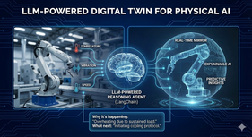
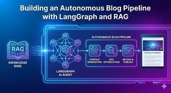
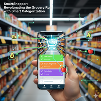

Physical AI & Edge AI

Physical AI Gateway: Real-time Anomaly Detection on ESP32
Deploying quantized TFLite models to the extreme edge using ESP32 and FreeRTOS. Detecting industrial safety anomalies with sub-100ms inference latency for fire suppression systems.
View details →
LLM-Powered Digital Twin for Physical AI
An LLM-powered Digital Twin that combines real-time IoT data, system-level rules, and a LangChain-based reasoning agent to explain what is happening, why it is happening, and what should be done next.
View details →Applied LLM Systems

Building an Autonomous Blog Pipeline with LangGraph and RAG
A deep dive into building an end-to-end automated content generation pipeline that researches, writes, and publishes high-quality technical blog posts using LangChain, RAG, and LangGraph.
View details →Building an Automated YouTube Content Pipeline with LangGraph
A deep dive into building an end-to-end automated content generation pipeline that plans, generates, produces, and uploads YouTube videos using LangGraph.
View details →Consumer Apps
Consumer iOS apps — full overviews live on the Marketing page.
SmartMembership: Building a Privacy-First Digital Loyalty Wallet on iOS
A technical deep dive into building a native iOS app for digitizing loyalty cards using SwiftUI, AVFoundation, and CoreImage, with a focus on local processing and robust barcode handling.
View details →
SmartShopper: Revolutionizing the Grocery Run with Smart Categorization
Introducing SmartShopper, an intelligent shopping list app that organizes your groceries by aisle, featuring smart categorization, quick entry, and accessibility-first design.
View details →